第9章：保存历史数据¶
@AppStorage是存储轻量级数据的绝佳选择，如设置和其他应用程序初始化。你可以在属性列表文件、数据库（如SQLite或Realm）或Core Data中存储其他应用程序数据。由于你已经学习了很多关于属性列表文件的知识，在本章中，你将把历史数据保存到一个属性列表文件中。
保存和加载代码本身非常简短，但在处理数据时，你应该始终意识到可能会发生错误。正如你所期望的那样，Swift有全面的错误处理功能，因此，如果出现任何问题，你的应用程序可以优雅地恢复。
在本章中，你将学习错误检查技术，以及从属性列表文件中保存和加载。具体来说，你会学到以下内容：
Optionals：Swift中不允许使用nil值，除非你将属性类型定义为Optional。Debugging：你可以通过使用断点的方式来修复一个错误。Error Handling：将抛出并捕获一些错误，这和听起来一样有趣。你还会在出现问题时提醒用户。Closures：这些是代码块，你可以作为参数传递或用于完成处理程序。Serialization：最后但并非最不重要的是，你将把你的历史数据翻译成可以存储的格式。
将完成的练习添加到历史中¶
➤ 继续上一章的项目，或打开本章起始文件夹中的项目。
➤ 打开HistoryStore.swift，检查addDoneExercise(_:)。这是在用户点击完成时将练习保存到exerciseDays的地方。
目前，在初始化HistoryStore时，你创建了一个假的exerciseDays数组。这对测试很有用，但现在你要保存真实的历史，就不再需要加载数据了。
➤ 在 init()中，注释掉createDevData()。
➤ 构建并运行你的应用程序。开始一个练习，并点击Done来保存历史记录。您的应用程序执行了 addDoneExercise(_:)，并以致命错误崩溃。索引超出范围。
Xcode突出显示了您的代码中的违规行：
if today.isSameDay(as: exerciseDays[0].date) {
这一行假设exerciseDays永远是空的。如果它是空的，那么试图访问索引为0的数组元素就超出了范围。当用户第一次启动应用程序时，他们的历史记录将永远是空的。一个更好的方法是使用可选的检查。
使用选项¶
本节将学习的技能：选项；解包；强制解包；过滤调试控制台。
Swift Dive: Optionals¶
在上一章中，为了从Preview的UserDefaults中删除一个键，你需要将nil分配给ratings。所以你把ratings定义为一个可选的String类型，在该类型中添加?：
@AppStorage("ratings") static var ratings: String?
这里的ratings可以是一个字符串值或nil。
你可能已经知道布尔值可以是true或false。但是一个可选的布尔值可以持有nil，给你第三个选择。
Swift
Optional实际上是一个有两种情况的枚举。some(Wrapped)和none，其中some有一个Wrapped类型的通用值，none没有值。
检查nil对于防止错误是很有用的。在编译时，Xcode防止Swift属性包含nil，除非你把它们定义为可选的。在运行时，你可以通过检查可选的first的值来检查exerciseDays是否为空：
if exerciseDays.first != nil {
if today.isSameDay(as: exerciseDays[0].date) {
...
}
}
当first是nil时，数组是空的，但是如果first不是nil，那么访问数组的索引0是安全的。这是true，因为exerciseDays不接受nil值。你可以通过这样的声明得到带有nil值的数组：
var myArray: [ExerciseDay?] = []
检查nil的更常见方法是使用：
if let newProperty = optionalProperty {
// code executes if optionalProperty is non-nil
}
这将把一个非选择的非包裹的结果放入newProperty。这里的unwrapped意味着只要optionalProperty不是nil，newProperty就会被赋予optionalProperty的内容。
➤ 将if today.isSameDay(as: exerciseDays[0].date) {改为:
if let firstDate = exerciseDays.first?.date {
if let告诉编译器，不管后面有什么，都可能导致nil。属性first?加上了?意味着first是一个可选项，可以包含nil。
如果exerciseDays是空的，那么first?将是nil，你的应用程序将不执行条件块，否则firstDate将包含exerciseDays中解包的第一个元素。
Swift Dive: Forced unwrapping¶
如果你真的确定你的数据是非nil的，那么你可以在可选类型上使用惊叹号!。这被称为强制解包，它允许你将一个可选的类型分配给一个非可选的类型。当你使用一个包含nil的强制解包的可选类型时，你的应用程序会崩溃。比如说：
let optionalDay: ExerciseDay? = exerciseDays.first
let forceUnwrappedDay: ExerciseDay = exerciseDays.first!
let errorDay: ExerciseDay = exerciseDays.first
optionalDay是ExerciseDay?的类型，当exerciseDays为空时允许nil。forceUnwrappedDay不是可选的，如果exerciseDays是空的，而你强制解开了first，可能会引起运行时错误。errorDay会导致编译错误，因为你试图将一个可能包含nil的可选项放入一个不能包含nil的属性中。
除非你真的确定该值永远不会包含nil，否则不要使用感叹号来强制解开它。
多个条件¶
当检查是否应该将练习添加或插入到exerciseDays时，还需要第二个条件来检查今天是否与数组中的第一个日期相同。
➤ 将if let firstDate = exerciseDays.first?.date {改为：
if let firstDate = exerciseDays.first?.date,
today.isSameDay(as: firstDate) {
你可以叠加条件，用逗号将它们分开。你的第二个条件是评估布尔条件。如果firstDate不是nil，并且today与firstDate是同一天，那么代码块就会执行。
➤ 在addDoneExercise(_:)的末尾，添加：
print("History: ", exerciseDays)
这将在添加或插入历史记录后将exerciseDays的内容打印到调试控制台。
➤ 构建并运行，完成一个练习并点击完成。
你的应用程序不会崩溃，而且你完成的练习会在控制台中打印出来。
筛选调试控制台¶
你可能会发现你的调试控制台充满了苹果的错误，要在那里看到你自己的print语句可能会很困难。
➤ 在控制台右下方的Filter中输入你希望看到的部分打印输出，在case History：
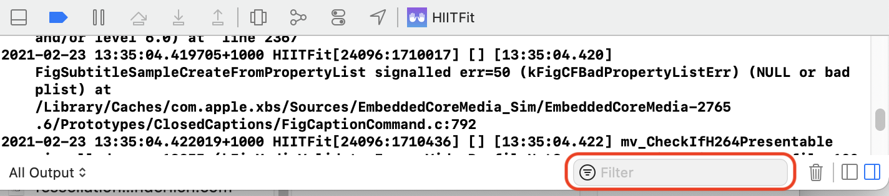
你的日志会自己显示出来：
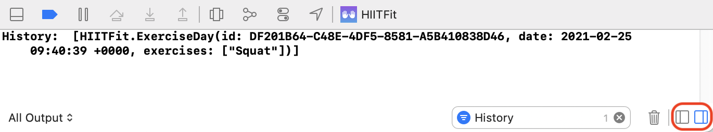
要隐藏调试控制台的左边面板，你可以选择右下方的图标。这可以让你更容易地阅读你的调试信息。
如果你有一些希望看到的打印语句，你可以在它们前面加上特定的字符，如>>>。
print(">>>", today)
print(">>> Inserting \(exerciseName)")
然后你可以在Filter中输入>>>，你的日志就会自己显示出来。
记住，当你完成后要清除你的过滤器。当你忘记添加>>>时，你会很沮丧，因为你过滤掉了你自己的调试日志。
调试HistoryStore¶
你将在本节中学习的技能：断点。
即使exerciseDays的内容在addDoneExercise(_:)的结尾处看起来是正确的，但如果你点击History，你的历史数据是空白的。这是一个现实生活中令人沮丧的情况，你很确定你做的一切都正确，但历史数据却拒绝保持原状。
是时候戴上你的调试帽子了。
第一个也是最困难的调试步骤是找到错误发生的地方，并能够持续地重现它。从头开始，耐心地进行。记录应该发生的事情和实际发生的事情。
➤ 构建和运行，完成一个练习并点选完成。exerciseDays的内容在调试控制台中正确打印出来。点击历史，视图是空的，而它应该显示exerciseDays的内容。这个错误每次都会发生，所以你可以确信能够重现它。
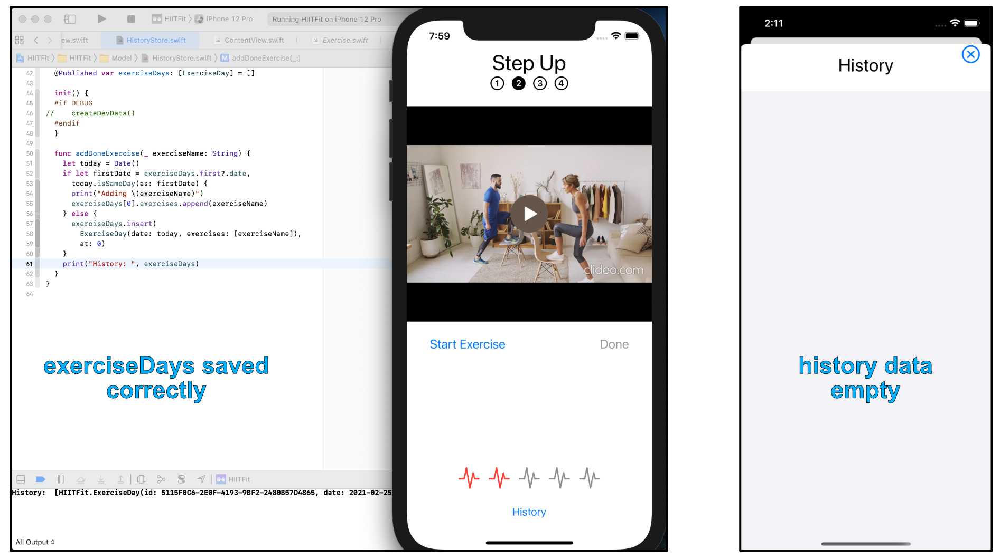
对断点的介绍¶
当你在你的应用程序中放置断点时，Xcode会暂停执行，并允许你检查变量的状态，然后，在代码中步进。
➤ 仍在运行应用程序，第一个练习已经完成，在Xcode中点击addDoneExercise(_:)中let today = Date()左边的沟槽，然后点击。这将在该行添加一个断点。
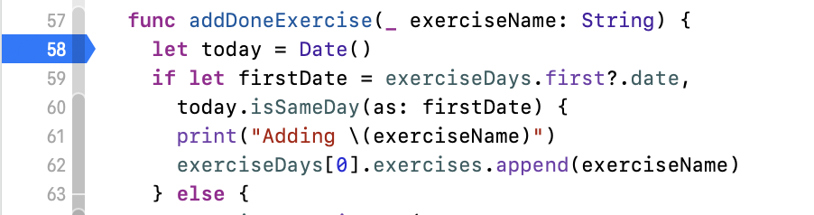
➤ 在不停止你的应用程序的情况下，完成第二个练习，并点击Done。
当执行到addDoneExercise(_:)时，会找到断点并暂停。调试导航器显示CPU、内存和当前线程操作的状态。调试控制台显示一个提示 - (ldb) - 允许你交互式调试。
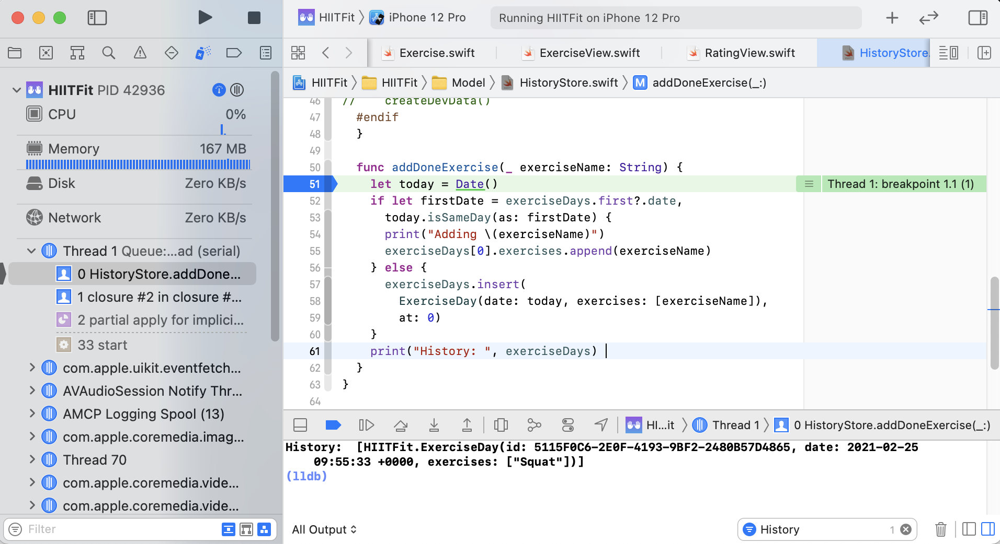
在调试控制台上方，你有控制执行的图标：
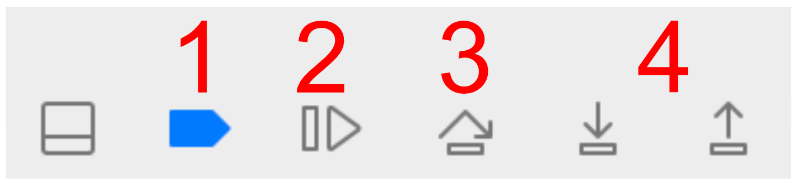
Deactivate breakpoints：打开和关闭你的所有断点。Continue program execution：继续执行您的应用程序，直到它到达另一个活动断点。Step over：如果要执行的下一行包括一个方法调用，在该方法完成后再次停止。Step into/out：如果你的代码调用了一个方法，你可以跨入该方法，并继续跨过它。如果你跨过一个方法，它仍然会被执行，但在每条指令后执行不会被暂停。
➤ 单击Step over，跨步到下一条指令。today现在已被实例化并包含一个值。
➤ 在调试控制台中，删除任何过滤器，并在(ldb)提示符下输入：
po today
po exerciseDays
po在调试控制台打印出today和exerciseDays的内容：
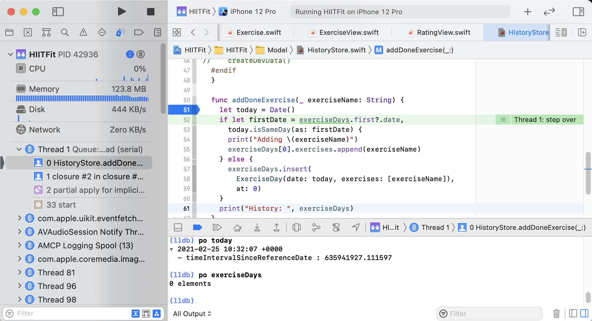
通过这种方式，你可以检查当前范围内的任何变量的内容。
尽管exerciseDays应该有前一个练习的数据，但它现在包含零元素。在点击两个练习的某个地方，exerciseDays被重置了。
➤ 踏过每条指令，检查变量，确保它们对你有意义。完成后，将断点从沟槽中拖出，将其删除。
调试操作的下一步是找到exerciseDays的真理源，以及该真理源何时被初始化。在这种情况下，你不需要找得很远，因为exerciseDays是由HistoryStore拥有的。
➤ 在init()的结尾处添加：
print("Initializing HistoryStore")
➤ 构建和运行，并通过执行练习和点选Done来重现你的错误。在调试控制台中，过滤历史记录。
你的控制台应该看起来像这样：
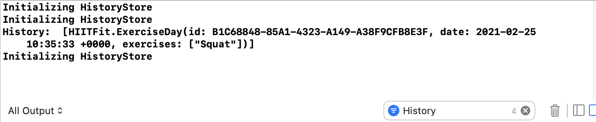
现在你可以看到为什么在做完练习后exerciseDays是空的。有东西在重新初始化HistoryStore!
➤ 打开ContentView.swift。这是在TabView上的环境对象修改器中初始化HistoryStore。
你可能记得在上一章的结尾，@SceneStorage在存储selectedTab时重新初始化了TabView。重新绘制时重新执行了environmentObject(HistoryStore())，并错误地将HistoryStore的所有数据初始化。
你现在已经成功地调试了为什么你的历史数据是空的。你现在要做的就是决定如何解决这个问题。
解决这个问题的第一步是将HistoryStore的初始化在视图层次结构中提高一个层次。在本章的后面，你将对HistoryStore进行设置，这样你就可以确定该存储空间将只初始化一次。
➤ 将environmentObject(HistoryStore())从ContentView的body中剪切出来。
➤ 打开HIITFitApp.swift，将修改器粘贴到ContentView：
WindowGroup {
ContentView()
.environmentObject(HistoryStore())
...
}
➤ 构建和运行，执行所有四个练习，在每个练习后点击完成，并检查你的历史：
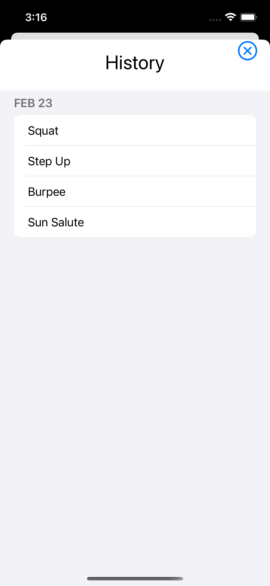
祝贺你! 你修复了你的第一个错误! 你现在可以带着自豪感和成就感从HistoryStore中删除所有的打印语句。
现在你可以继续下去并保存你的历史，这样它就不会在你每次重启你的应用程序时被重置。
Swift错误检查¶
你将在本节中学习的技能：抛出和捕捉错误。
保存和加载数据是一项严肃的工作，如果发生任何错误，你需要知道它们。对于文件系统错误，你能做的不多，但你可以让你的用户知道发生了错误，他们需要采取一些行动。
➤ 打开HistoryStore.swift，为HistoryStore添加一个新的枚举：
enum FileError: Error {
case loadFailure
case saveFailure
case urlFailure
}
这是你要检查的可能的错误列表。
要创建一个引发错误的方法，你要用throws来标记它，并添加一个throw语句。
➤ 将此新方法添加到 HistoryStore中：
func load() throws {
throw FileError.loadFailure
}
在这里，你将从磁盘上的一个文件读取历史数据。目前，这个方法将总是引发一个错误，但是当你添加加载代码时，你会在后面回到它。当你抛出一个错误时，该方法立即返回，不执行任何后续代码。处理错误的应该是调用者，而不是抛出的方法。
try…catch¶
当调用一个抛出的方法时，你使用try。如果你不需要特别处理任何错误，你可以用try?调用方法，例如，try? load()。这将把错误结果转换为nil，然后继续执行。为了处理来自抛出方法的错误，你可以使用表达式do { try ... } catch { }。
➤ 将此添加到 init()的结尾：
do {
try load()
} catch {
print("Error:", error)
}
你调用抛出方法，如果有错误，catch块就会执行。
➤ 构建和运行，在调试控制台中，你会看到你打印的错误：Error: loadFailure。(如果有的话，记得清除你的调试控制台过滤器）。
抛出初始化器¶
你也可以在初始化一个对象时抛出错误。如果你加载历史数据失败，你可以报告一个灾难性的错误并使应用程序崩溃，或者，最好是报告一个错误，但继续没有历史和空的exerciseDays。
➤ 将init()的签名改为：
init(withChecking: Bool) throws {
你将尝试使用这个初始化器来创建一个HistoryStore，但如果有必要的话，会退回到默认的初始化器。
➤ 创建一个新的默认初始化器：
init() {}
这是你的后备初始化器，它不会调用任何加载代码。
➤ 在 init(withChecking:)中，将print("Error:", error)改为：
throw error
这将把错误传回给初始化HistoryStore的对象。
➤ 打开HIITFitApp.swift。这是你初始化HistoryStore并将其放入环境中的地方。
➤ 给HIITFitApp添加一个新属性：
@StateObject private var historyStore: HistoryStore
到目前为止，你已经用@State来表示可变的值。你应该只对临时项目使用@State属性，因为它们会在视图被删除时消失。@StateObject将创建一个可观察的对象，当视图被删除时它不会消失。
@State由于是瞬时的，所以与引用对象不兼容，由于HistoryStore是一个类，@StateObject是这里的正确选择。
Note
如果你对到目前为止所使用的所有属性封装器感到困惑，你将在第11章"理解属性封装器"中回顾它们。
在本章的早些时候，你把HistoryStore的初始化从ContentView移到了HIITFitApp，但注意到这个商店必须只初始化一次。@StateObject是一个只读的属性包装器。你只有一次初始化的机会，而且一旦你设置了这个属性，你就不能改变它。
由于你想用抛出的方法来实例化historyStore，你将使用一个初始化器。
➤ 在HIITFitApp中，创建一个新的初始化器：
init() {
let historyStore: HistoryStore
do {
historyStore = try HistoryStore(withChecking: true)
} catch {
print("Could not load history data")
historyStore = HistoryStore()
}
}
当ContentView第一次初始化时，你会尝试加载历史。如果没有错误，那么historyStore将包含加载的历史数据。如果try失败了，那么你就打印出一条错误信息，并使用HistoryStore的默认初始化器。HistoryStore.init()不可能失败，但会用空的历史数据加载。
你仍然必须将本地的historyStore分配给状态对象。
➤ 在init()的末尾添加这个：
_historyStore = StateObject(wrappedValue: historyStore)
顾名思义，属性包装器包装了一个底层的值或对象。你使用StateObject(wrappedValue:)初始化器来设置状态对象的包装值，并使用下划线前缀来将初始化的状态对象分配给historyStore。
➤ 将.environmentObject(HistoryStore())改为：
.environmentObject(historyStore)
这里你使用状态对象，而不是创建HistoryStore，在设置环境对象时。
➤ 构建和运行，由于load()仍然抛出一个错误，你会在调试控制台看到你的错误。无法加载历史数据。
Alerts¶
你将在本节中学习的技能。警示视图。
当你发布你的应用程序时，你的用户将不能看到print语句，所以你必须为他们提供更明显的交流。当你想让用户选择行动时，你可以使用ActionSheet，但是，对于简单的通知，Alert是完美的。一个Alert会弹出一个标题和一条信息，并暂停应用程序的执行，直到用户点击确定。
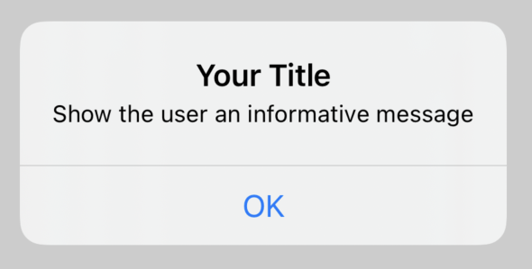
➤ 打开HIITFitApp.swift，为HIITFitApp添加一个新属性：
@State private var showAlert = false
这个切换将控制你是否显示alert。
➤ 在init()的catch块中，更新showAlert：
showAlert = true
➤ 为ContentView添加一个新的修改器：
.alert(isPresented: $showAlert) {
Alert(
title: Text("History"),
message: Text(
"""
Unfortunately we can’t load your past history.
Email support:
support@xyz.com
"""))
}
当showAlert为true时，你会显示一个Alert视图，并提供Text标题和信息。用三个"""围住字符串，以在多行上格式化你的字符串。
➤ 构建和运行。因为HistoryStore的初始化器失败了，所以你将showAlert设置为真，这导致你的Alert显示。

➤ 点确定。Alert重置了showAlert，你的应用程序继续使用空历史数据。
现在你对错误检查的测试已经完成，打开HistoryStore.swift，从load()中删除throw FileError.loadFailure。
Note
你可以在我们的《Swift学徒》一书中找到更多关于错误处理的信息，其中有一整章是关于这个问题的。你可以在以下网址找到Swift Apprentice。
储存历史¶
你将在本节中学习的技能：FileManager.
你将首先把你的历史数据保存到磁盘，然后，再来使用保存的数据填写load()。
➤ 为HistoryStore添加一个新的方法，以创建你将保存数据的URL：
func getURL() -> URL? {
// 1
guard let documentsURL = FileManager.default.urls(
for: .documentDirectory, in: .userDomainMask).first else {
// 2
return nil
}
// 3
return documentsURL.appendingPathComponent("history.plist")
}
该方法返回一个可选的URL。然后，调用方法可以决定如果这个方法的结果是nil，该怎么做。
翻阅代码：
- 使用
guard，你可以在一个条件没有满足的情况下跳出方法。guard let与if let类似，你将一个可选变量分配给一个非可选变量，并检查它是不是nil。这里你检查FileManager.default.urls(for:in:).first是不是nil，如果不是nil，就把它分配给documentsURL。 - 你总是提供一个
else分支和guard，当guard条件测试失败时，你指定如何离开该方法。一般来说，你从方法中返回，但你也可以使用fatalError(_:file:line:)来崩溃应用程序。 - 你把文件名添加到文档路径中。这给了你一个文件的完整
URL，你将把历史数据写入其中。
➤ 在HistoryStore中增加一个新的抛出方法：
func save() throws {
guard let dataURL = getURL() else {
throw FileError.urlFailure
}
}
你设置了你的URL。如果getURL()返回nil，你会抛出一个错误，save()停止执行。
你要把历史数据保存到一个属性列表（plist）文件中。正如前一章提到的，属性列表文件的根可以是一个字典或一个数组。当你有一些离散的值，你可以通过键来引用时，字典很有用。但是在历史的例子中，你有一个ExerciseDay的数组要存储，所以你的根将是一个数组。
属性列表文件只能存储一些标准类型，而ExerciseDay作为一个自定义类型，并不在其中。在第19章"保存文件"中，你将了解到 Codable 以及如何将自定义类型保存到文件中，但现在，简单的方法是将每个 ExerciseDay 元素分离成一个 Any 的数组，并将其追加到要保存到磁盘的数组中。
➤ 在前面的代码之后将此添加到save()中：
var plistData: [[Any]] = []
for exerciseDay in exerciseDays {
plistData.append(([
exerciseDay.id.uuidString,
exerciseDay.date,
exerciseDay.exercises
]))
}
对于循环中的每个元素，你用一个String、一个Date和一个[String]构建一个数组。你不能在一个Array中存储多种类型，所以你创建一个[Any]类型的数组，并将这个元素追加到plistData。
plistData是一个[[Any]]类型。这是一个二维数组，它是一个包含数组的数组。在保存了两个元素后，plistData将看起来像这样：
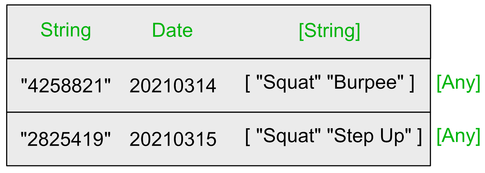
for循环将exerciseDays映射到plistData。换句话说，这个循环将一组数据转换为另一组数据。由于这种情况在代码中经常发生，Swift提供了map(_:)，这是Array上的一个优化方法，用于数据的转换。
Closures¶
本节将学习的技能：闭包；map(_:)；转换数组。
Swift Dive: Closures¶
map(_:)需要一个闭包作为参数，所以，在继续之前，你将学习如何使用闭包。你已经使用过很多次了，因为SwiftUI广泛使用它们。
闭包只是两个大括号之间的一个代码块。闭包看起来很复杂，但如果你知道如何把一个闭包放在一起，你会发现你经常使用它们，就像SwiftUI一样。注意闭包与函数的相似性。函数是闭包--有名字的代码块。
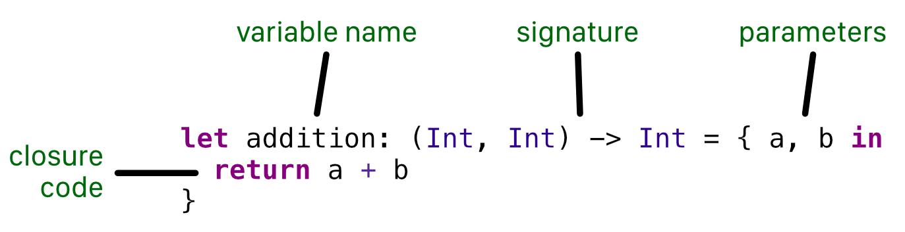
闭包是两个大括号{...}之间的部分。在上面的例子中，你把闭包分配给一个变量addition。
addition的签名是(Int, Int) -> Int，声明你将传入两个整数并返回一个整数。
重要的是要认识到，当你把一个闭包分配给一个变量时，闭包的代码并不执行。变量addition包含代码return a + b，而不是实际结果。
为了执行闭包代码，你要用它的参数来执行它：
你把1和2作为两个整数参数传入，然后收到一个整数：
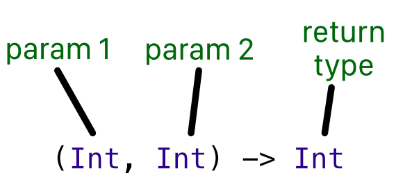
另一个例子：
let aClosure: () -> String = { "Hello world" }
这个闭包不接受任何参数，并返回一个字符串。
你当前的任务是将每个ExerciseDay元素转换为[Any]类型的元素。
这个闭包将为单个ExerciseDay元素执行这一转换：
let result: (ExerciseDay) -> [Any] = { exerciseDay in
[
exerciseDay.id.uuidString,
exerciseDay.date,
exerciseDay.exercises
]
}
result的类型是(ExerciseDay) -> [Any]。这个闭包接收了一个参数exerciseDay，并将exerciseDay的属性合并成一个[Any]类型的数组。
使用map(_:)来转换数据¶
类似于for循环, map(_:)逐一检查每个元素, 将数据转换为新的元素, 然后将它们全部合并为一个数组.
你可以发送result给map，它返回一个结果数组：
let plistData: [[Any]] = exerciseDays.map(result)
map(_:)接收闭包result，对exerciseDays中的每个元素进行执行，并返回一个结果数组。
与其将其分离到一个闭包变量中，不如将map操作与闭包一起声明更常见。
➤ 替换之前的代码，从var plistData: [[Any]] = []到save()的结尾处，改为：
let plistData = exerciseDays.map { exerciseDay in
[
exerciseDay.id.uuidString,
exerciseDay.date,
exerciseDay.exercises
]
}
Array.map(_:)的完整声明是：
func map<T>(
_ transform: (Self.Element) throws -> T) rethrows -> [T]
- 如果
map(_:)发现任何错误，它将抛出。 T是一个泛型类型。你会在第2节发现更多关于泛型的内容，但在这里T等同于[Any]。transform的签名是(Self.element) -> T。你会认识到这是一个闭包的签名，你向它传递一个ExerciseDay的元素，并返回一个[Any]类型的数组。
这就是你的代码与map(_:)匹配的方式：
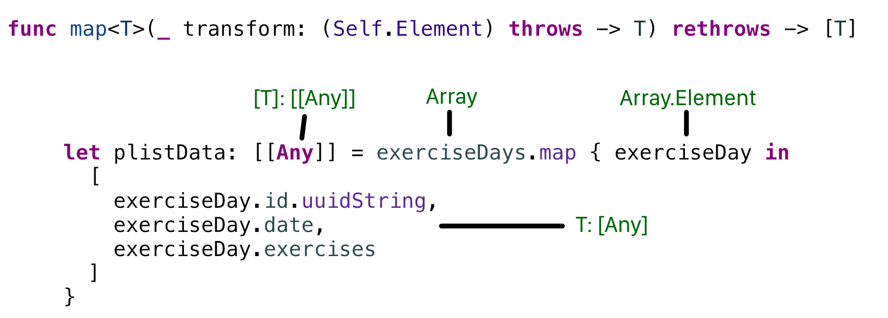
这段代码得到的结果与之前的for循环完全相同。选择点击plistData，你会看到它的类型是[[Any]]，就像以前一样。
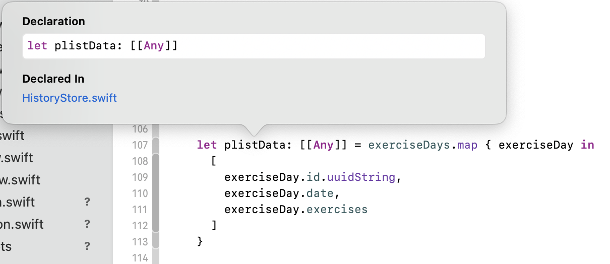
使用map(_:)而不是在for循环中动态追加到一个数组的一个好处是，你可以用let将plistData声明为一个常量。这是一些额外的安全，这样你就知道你不会意外地改变plistData。
一种替代的结构¶
当你有一个简单的转换，并且你不需要完整地拼出所有的参数，你可以使用$0，$1，$2，$...作为多个参数名称的替换。
➤ 将前面的代码改为：
let plistData = exerciseDays.map {
[$0.id.uuidString, $0.date, $0.exercises]
}
这里你有一个输入参数，你可以用$0代替。当使用$0时，你不需要在第一个大括号{后指定参数名称。
同样，这段代码给出了完全相同的结果。选择点击plistData，你会看到它的类型仍然是[[Any]]。
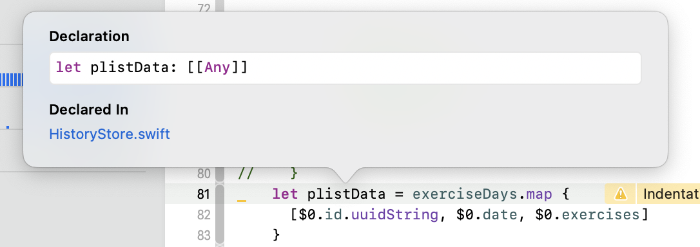
Swift Dive: filter(_:)和reduce(_:_:)¶
还有其他一些常见的方法可以将一个数组转换为另一个数组。
使用filter(_:)你可以将一个数组过滤成另一个数组，例如：
let oneToThree = [4, 2, 0, 9, 3, 1].filter {
Range(1...3).contains($0) // same as $0 >= 1 && $0 <= 3
}
这个闭包接收数组中的每个元素，如果整数在1到3之间，则返回一个true的值。当闭合结果为true时，该元素被添加到新数组中。完成这段代码后，oneToThree包含[2, 3, 1]。
reduce(_:)将一个数组中的所有元素合并成一个值。比如说：
let result = [4, 2, 0].reduce(0) { runningTotal, value in
runningTotal + value
}
你调用reduce(_:_:)时有一个起始值。尽管你可以用$0和$1代替这里的参数，但代码中明确命名的参数读起来更好。第一个参数是运行总数，你把第二个参数加到第一个参数上，结果是一个单一的值。在这段代码之后result将包含6。
属性列表序列化¶
你将在本节中学习的技能：属性列表序列化。
将数据写入属性列表文件中¶
现在你的历史数据在一个数组中，只有简单的数据类型，属性列表可以识别。下一个阶段是将这个数组转换为可以写入文件的字节缓冲区。
➤ 在save()的末尾添加这段代码：
do {
// 1
let data = try PropertyListSerialization.data(
fromPropertyList: plistData,
format: .binary,
options: .zero)
// 2
try data.write(to: dataURL, options: .atomic)
} catch {
// 3
throw FileError.saveFailure
}
翻阅代码：
- 你把你的历史数据转换为序列化的属性列表格式。结果是一个
Data类型，它是一个字节的缓冲区。 - 你使用你先前格式化的
URL写到磁盘。 - 转换和写入时可能会出现错误，你通过抛出一个错误来捕获这个错误。
➤ 从addDoneExercise(_:)的结尾处调用save()：
do {
try save()
} catch {
fatalError(error.localizedDescription)
}
如果在保存时出现错误，你就会使应用程序崩溃，打印出错误的字符串描述。这不是一个运送应用程序的好方法，你可能希望以后能改变它。
➤ 构建和运行，做一个练习。点一下Done，你的历史文件就会保存。
➤ 在Finder中，转到你的应用程序的文档目录，你会看到history.plist。双击该文件以在Xcode中打开该文件。
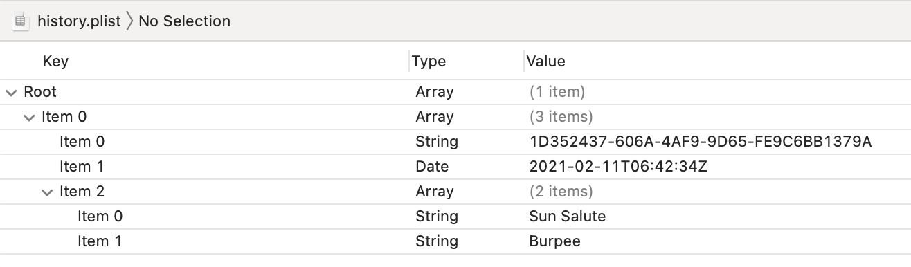
看看财产清单文件与你的数据如何匹配：
Root：你保存在plistData中的属性列表数组。这是一个[[Any]]类型的数组。Item 0：exerciseDays中的第一个元素。这是一个类型为[Any]的数组。Item 0：id转换为String格式。Item 1：练习的日期Item 2：已进行的练习数组，并点选完成保存。在这个例子中，用户在一天内做了两个练习：Sun Salute和Burpee。
从属性列表文件中读取数据¶
你成功地写入了一些历史记录，所以现在你可以在每次应用程序启动时将其加载回来。
➤ 在HistoryStore.swift中，在load()中加入这段代码：
// 1
guard let dataURL = getURL() else {
throw FileError.urlFailure
}
do {
// 2
let data = try Data(contentsOf: dataURL)
// 3
let plistData = try PropertyListSerialization.propertyList(
from: data,
options: [],
format: nil)
// 4
let convertedPlistData = plistData as? [[Any]] ?? []
// 5
exerciseDays = convertedPlistData.map {
ExerciseDay(
date: $0[1] as? Date ?? Date(),
exercises: $0[2] as? [String] ?? [])
}
} catch {
throw FileError.loadFailure
}
加载与保存非常相似，但有一些类型检查以确保你的数据符合你所期望的类型。翻阅代码：
- 首先像保存文件那样设置URL。
- 将数据文件读入一个字节缓冲区。这个缓冲区的格式是属性列表。如果
history.plist在磁盘上不存在，Data(contentsOf:)会抛出一个错误。在这种情况下，抛出一个错误是不正确的，因为当你的用户第一次启动你的应用程序时，不会有历史记录。你将修复这个错误，作为你本章的挑战。 - 将属性列表的格式转换成你的应用程序可以读取的格式。
- 当你从一个属性列表序列化时，结果总是
Any类型。要转换到另一种类型，你可以使用类型转换操作符as?。如果类型转换失败，这将返回nil。因为是你自己写的history.plist，你可以非常确定其内容，你可以将plistData从Any类型转换为你序列化到文件的[[Any]]类型。如果由于某些原因history.plist不是[[Any]]类型，你可以使用nil凝聚操作符??提供一个空数组的回退。 - 将
convertedPlistData转换为预期的[[Any]]类型，使用map(_:)将[Any]的每个元素转换为ExerciseDay。你还确保数据是预期的类型，并在必要时提供回退。
➤ 构建和运行，并点选History。你保存在属性列表文件中的历史将在模版中加载：
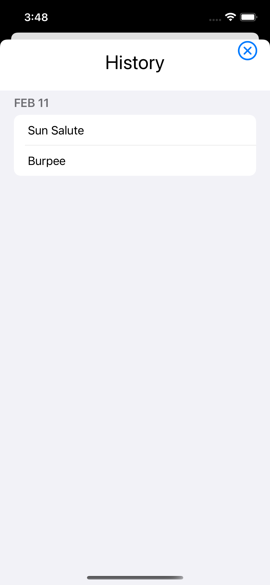
挑战¶
➤ 在Finder中删除history.plist，然后构建并运行你的应用程序。你的加载错误出现是因为load()失败。
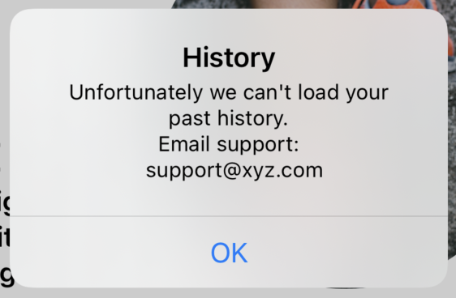
你没有首先检查history.plist是否存在。如果它不存在，Data(contentsOf:)就会抛出一个错误。
你的挑战是忽略这个错误，因为在这种情况下，最可能的错误是该文件不存在。记住，你可以使用try?来放弃一个错误。当你完成任务后，你的应用程序应该从history.plist中加载数据（如果它存在），如果不存在则不采取任何行动。
你可以在本章挑战目录下的load()中找到这个挑战的答案。
关键点¶
- 选项是可以包含
nil的属性。可选属性使你的代码更加安全，因为编译器不允许你将nil分配给非可选属性。你可以使用guard let来解开一个可选属性，或者在可选属性包含`nil'时退出当前方法。 - 不要用
!标记来强制解除可选属性的包装。在给一个新的属性分配选项时，使用！是很诱人的，因为你认为这个属性永远不会包含nil。相反，通过使用nil凝聚操作符??分配一个回退值来保证你的代码安全。例如：let atLeastOne = oldValue ? 1. - 使用断点来停止执行，并通过代码来确认它是否正常工作，以及变量是否包含你期望的值。
- 使用
throw来抛出由throws标记的方法中的错误。 - 如果你需要处理错误，用
do { try ... } catch { ... }.catch只有在try失败时才会被执行。如果你不需要处理错误，你可以用let result = try? method()来调用该方法。如果有错误，result将包含nil。 - 使用
@StateObject来保存你的数据存储。你的应用程序将只初始化一次状态对象。 - 闭包是大块的代码，你可以像其他对象那样传递。你可以把它们分配给变量或作为参数提供给方法。一个常见的模式是将闭包作为一个完成处理程序，在操作完成时执行。
Array有许多方法需要闭包来将其元素转化为新的数组。 PropertyListSerialization只是将数据保存到磁盘的一种方法。你也可以使用JSON，或者Core Data，它管理对象和它们的持久性。